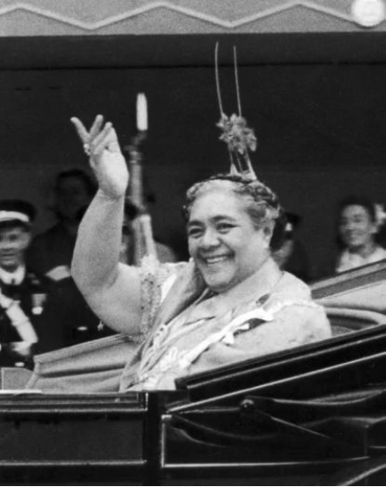

Greeting Word: Malo e lelei
Current Population: 120,000
Location: The kingdom of Tonga – consisting of Ha’apai, Tongatapu and Vava’u island groups – is the about 3,100 (4,950 km) southwest of Hawaii, or about two thirds of the way to New Zealand. It is also east of Fiji and southwest of Samoa.
Size: The approximately 170 islands, most of which are low-lying and fertile, cover a landmass of about 280 square miles (710 km²).
Known: The Friendly Island of Polynesia
Fact: The letter ‘g’ in Tongan is always pronounced like ‘ng’ as in the English word singer – even when it is the first letter in a word – and never as the word finger.
TONGA consists of more than 171 small groups of islands, which cover approximately 290 square miles of land. Most of the islands of Tonga are low coral formations, except the Vava’u groups, which are of volcanic origin. The climate is fairly cool, by tropical standards, with temperatures averaging about 80 degrees between May and November and rising to about 90 degrees between December and April.
Tonga has a population of about 120,000 people. It is the last remaining kingdom in Polynesia and is the only island nation with the distinction of having never being formally colonized by a European power. Throughout World War II, at the first King’s request, Britain protected Tongan interests under various treaties, but Tonga has always maintained her autonomy. The present King of Tonga is His Royal Highness King ‘Aho’eitu Unuaki’otonga Tuku’aho Tupou VI (regnal name: Tupou VI) who was the successor to King George Tupou V (his brother).
As we look at the huts or structures in the Tongan Village you will notice that they are shaped very much like others of Polynesia, especially Samoan huts, except that Tongan huts have thatched walls. Tapa is usually used to line the inside of the walls of Tongan structures called fale. The support structures are lashed together with coconut sennit. In former times, no nails or screws were used to hold the buildings together. Other building materials are used to give the structures a dome-shaped appearance, which being higher, gives more efficient ventilation keeping the inside some what cooler.
FALE FAKATU’I:
Queen Salote’s Summer House
This building is called the Fale Fakatu’i and it is the exact quarter scale model of the former queen’s summer house in Tonga. Queen Salote, a beloved and revered figure in Tongan history, had this structure built here at the Polynesian Cultural Center by her personal workmen. This fale is raised on a rock platform and supported inside by four large ironwood posts, typical of Tongan architectural style. One of the typical roofing materials in Polynesia is sugar cane leaves as it is used on this structure. This royal house is highly decorated with elaborate sennit lashings, fine reed walls, intricately woven mats, and cowry shells. Dried coconut leaves are placed on the floors and then covered with finely woven mats which add extra softness.
The addition of this special structure at the Polynesian Cultural Center was important enough to the royal family of Tonga that the Crown Prince attended the dedication ceremony in 1963 representing his family. Inside, you will find pictures of Tongan royalty. One picture is of King George Tupou I, who emancipated his people and established a constitutional government, based upon Christian principles -- mainly the Ten Commandments. Another picture is of King George Tupou II. His daughter, Queen Salote Tupou III, ascended to the throne in 1918 at the age of eighteen, and ruled for 47 years until her death in 1965, is also pictured.
She was followed by King Taufa’ahau Tupou IV, who passed away in 2007. He is credited for doing much to further education in his land, and has been awarded an honorary Doctorate Degree from Brigham Young University for his interest in the progress of his people.
API NOFO’ANGA:
Family Dwelling
This structure is a typical dwelling house in Tonga. Behind the partition is the parent’s bedroom. The bedding consists of layers of mats. Young children usually slept at the center of the fale. Each night special mats were spread on which the children could sleep. In the morning the mats were rolled up so that the center of the structure could also be used as the sitting room. As girls in the family reached sixteen years of age, a partition was built to provide them with private sleeping quarters on the other side of the building. Around age sixteen boys slept in a separate structure built especially for them. In general, the only furnishings traditionally found in a Tongan home are mats and tapa cloth, which are used extensively for decorating. The dwelling house is the scene for most family activities. Even the courting of daughters by suitors takes place in the dwelling house so that all family members can meet and evaluate the young man.
FALE FAKAKOLO
also known as Fale Fakataha: Meeting House
Most village or community meetings are held in this meetinghouse. Civic problems, community affairs are addressed, and Kava ceremonies are performed here. Kava is often called "the official drink of the Pacific.” In a kava ceremony, which is one of the highest forms of showing respect for guests or village chiefs, the ranking chief sits on the elevated portion of the floor. The lower section of the floor is for both men and women commoners. Anciently, village meetings took place once a month, but today, meetings are held more frequently.
Kava has been part of Tongan formal ceremony and social culture for more than 2000 years. The kava is made from the root of Pepper Methysticum, a native pepper plant. The root is first pulled from the ground and washed. The outer skin is then scraped revealing the creamy colored core that is pounded into a powder form. A special carved bowl is used for mixing the kava drink. The amount of water needed to accommodate the number of participants is poured into the bowl. The kava powder is then stirred in. A strainer made from the tangled fibers of the wild hibiscus bark is used to strain the kava and obtain the clearest liquid possible. The kava is served in a half coconut shell cup. Kava, though nonalcoholic, contains a mild narcotic that induces a state of restfulness and well being. There are no hangover effects from kava.
FALE HANGA: Women’s Work House
Koka’anga or tapa-making & Weaving
In Tongan society, this is the fale where women usually do their arts and crafts, such as tapa cloth making. Tapa was used primarily for clothing and bedding. Today, however, tapa is used mostly at ceremonial occasions for gift giving such a weddings or funerals and we also use it here in the islands as dancing costumes.
Tapa cloth is made from inner bark of the paper mulberry tree. Because the bark is naturally hard and dry, it is first soaked in fresh water overnight prior to working on it. Women then gather the soaked bark and place it on a tutua or large flat log and begin to pound it with an ike or wooden mallet. The inner bark soon thins out to the point where holes begin to appear. It takes about 45 minutes or more of continuous pounding. The strips are then hung in the sun to dry. A special glue obtained from half-boiled tapioca is used to glue the strips lengthwise and crosswise to make the tapa cloth.
Tapa varies from one Polynesian group to another. Tongans call it ngatu. In Samoa it is called siapo. Fijians call this cloth masi. In Hawai’i it is called kapa. One way of distinguishing the various island types of tapa is in the designs. To make the designs on the tapa cloth, brown and black dyes are usually used. The brown dye is obtained from the inner bark of the candlenut tree (kukui). Black dye is obtained by boiling the brown dye with red hibiscus leaves and flowers.
Stencils (called kupesi in Tongan) are made from the mid ribs of the coconut leaves, the threads are from the wild hibiscus bark and the coconut fibers as the backing board. The stencil being placed under the cloth and the brown dye is rubbed onto the cloth. The raised parts of the stencil pick up more dye and so the designs and patterns stand out more prominently on the cloth. Black dye is applied with natural pandanus dried seed brushes after the cloth has dried which completes the intricate designs. The black and brown dyes are permanent once they have dried. These days, the Tongan people are some of the most active Polynesians in preserving the traditional art of tapa-making. If you were to go to Tonga today, you would likely hear the constant pounding of the ike or wooden mallet against the tutua log as the women of Tonga worked to make their prized tapa cloth.
LALANGA: (Weaving) The two plants that are important to the craft of weaving in Polynesia are pandanus and coconuts trees. The pandanus leaves are favored for the weaving of the household items such as floor mats, storage baskets, tablemats and fans. They were also used for canoe sails, bracelets and footwear. These leaves were cut when they were still green and laid out to dry in direct sunlight. After 2 weeks when the leaves are dried, they are twisted and hung for weeks. Then they are smoothed out and rolled one after another into larger rolls of about a foot in diameter, and then they are secured, stacked and stored for later use.
When the women are ready to use the leaves they are rubbed with a smooth shell until they are flat and pliable. Then using a different shell they are cut according to their required width. The thinner the strips the more important and valuable the project. The coconut leave is other important weaving material in Polynesia. The leaves are cut right off the tree and utilized. Baskets, hats and bowls are easily made because the leaves can be stripped off the main leaf. Coconut leaves provide an easy finish off a house. They can be layered to make a roof, walls and used as screen out the wind and rain, or made into mats used to line the floor over which fine mats would be used.
FALE PEITO:
Cooking Hut
The Fale Peito is the cooking hut and is usually build away from other buildings in the home because of the smoke and flame while preparing and cooking of food. The underground oven or ‘umu is usually started once a day in early morning. The main hot meal of the day is eaten at noon. Enough food is cooked in the umu so that there is enough for the whole day. However, the cooks have learned proper placement of various food items in the umu to assure that proper temperatures are maintained as closely as possible for the best possible cooking of the food.
The earth oven in Polynesian is the man’s domain because it is so physically demanding from the beginning to the end. You must first dig a bowl-shaped pit, gather firewood preferably dried, good burning twigs and branches and large rocks. The fire is started with dried coconut leaves and the dried braches then the large firewood are placed into a sturdy flat shape. The rocks are then placed carefully over the complete framework and the rocks are heated until they are grayish white in color. The unburned woods are removed and the rocks are leveled to the bowl-shape again. The banana stumps are then place on top of the hot rocks. The pit is then filled with food that had been prepared and then covered them with a lot of banana leaves. The oven is totally covered with dirt to ensure that no steam escapes from the mound.
This hut is usually divided into two sections, forming a kitchen and a dining area. After its ready, the food is removed and taken to the dining area. Food is served and eaten on long trays called pola, covered with banana leaves. Fingers, rather than utensils, are the exclusive means of eating. Meals, which can consist of many different types of foods at once, including pork, suckling pig, fish, crayfish, beef, octopus, and an array of tropical fruits are eaten sitting cross-legged on mats on the ground. For each meal, new banana leaf “tablecloths” are provided.
Terms:
Api Nofoʻanga – Family dwelling; typical Tongan home divided into spaces for parents, children, and guests, decorated with mats and tapa cloth.
Fale – General term for house or building in Tonga, traditionally with thatched walls and coconut sennit lashings.
Fale Fakatui – Queen Salote’s summer house; quarter-scale model of her royal home, symbolizing Tongan nobility and tradition.
Fale Hanga – Women’s work house; also called Kokaʻanga fale, where tapa cloth (ngatu) is made by pounding hiapo bark with an ike on a tutua log.
Fale Peito – Cooking hut separated from the main dwelling; includes the earth oven (umu) used to prepare meals traditionally served on banana leaves.
Fakakolo / Fale Fakataha – Meeting house where chiefs and villagers gather for community discussions and kava ceremonies.
Hiapo – Paper mulberry tree; source of bark used to make tapa cloth (ngatu).
Ike – Wooden mallet used for pounding bark fibers during tapa making.
Kava – Ceremonial drink made from the root of the kava plant (Piper methysticum); used in social and chiefly rituals.
Kokaʻanga – The communal process of making tapa cloth (ngatu) in Tongan society.
Kupesi – Pattern stencil used to create traditional geometric designs on tapa cloth.
Lalanga – Weaving using pandanus and coconut leaves for mats, baskets, fans, canoe sails, and roofs.
Malo e Lelei – Traditional Tongan greeting meaning “Hello” or “Good day.”
Ngatu – Tongan tapa cloth made from hiapo bark, joined with natural glue, and decorated with brown and black dyes for ceremonies.
Pepper Methysticum – Scientific name for the kava plant; its roots are used to make the kava drink.
Pola – Long trays covered with banana leaves used for serving and sharing meals.
Sennit (Kaea) – Braided coconut fiber cord used for lashing houses and structures together without nails.
Tapa – Bark cloth made from hiapo; known as ngatu in Tonga, siapo in Samoa, masi in Fiji, and kapa in Hawai‘i.
Tonga – Polynesian kingdom consisting of over 170 islands, including Tongatapu, Ha’apai, and Vava’u; the only Polynesian kingdom never formally colonized.
Tutua – Wooden log used as a base when pounding bark to make tapa.
Umu – Traditional Polynesian earth oven; a bowl-shaped pit heated with rocks and covered with banana leaves for cooking.